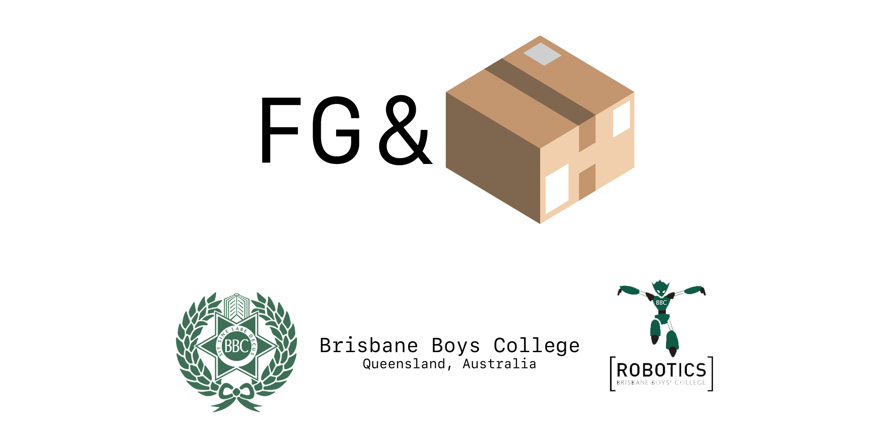

Brisbane Boys college, Queensland Australia
The Buzzer library is used to control an analog buzzer build into FG&B's 2017 robots.
To use the library, import it to your main c++ file
xxxxxxxxxxTo declare the buzzer object
xxxxxxxxxxBuzzer audio = Buzzer();To use the buzzer call the method
xxxxxxxxxxaudio.playTone(200);The Compass library is use to control the MPU9250 Compass, Gyro and Accelerometer package.
To use the library, import it into your main c++ file
xxxxxxxxxxTo declare the compass object
xxxxxxxxxxCompass compass = Compass();To use the compass call these methods
xxxxxxxxxxcompass.getUpdate();double heading = compass.getFinalHeading();Config contains configurable constants useful for modifying the behaviour of the robot.
Defines contains set constants that shouldn't need to be changed
Pins contains the constant definitions of pins for the teensy micro-controller.
To use these libraries import them using
xxxxxxxxxxThe direction controller controls all all directional movement via four motors.
To use the library, import it into your main c++ file
xxxxxxxxxxTo declare the direction controller object
xxxxxxxxxxDirectionController direction = DirectionController();To use primary methods
xxxxxxxxxxdirection.calcMotors(angle, rotation);//ordirection.calcMotors(angle, rotation, orbitNum);//ordirection.setPWM(value/*-255 - 255*/);The FGB Common header contains methods that are being globally used across multiple libraries and methods that don't belong to a class
To use the library, import it into your main c++ file
xxxxxxxxxxThe Kicker libary controls the actions of the solenoid and lightgate on each robot
To use the library, import it into your main c++ file
xxxxxxxxxxTo call the constructor and declare the kicker object
xxxxxxxxxxKicker kicker = Kicker();To use the kicker, the lightgate must first be triggered, then the code checks if the delay between kicks it long enough (this is to allow the caps for the solenoid to charge). If both criteria are met, the solenoid will kick.
xxxxxxxxxxkicker.kickerReady();kicker.checkLightGate();kicker.kick();The Light library controls all 20 lightsensors on the botom of the robot and keeps us from going out over the white line.
To use the Light library, import it into your main c++ file
xxxxxxxxxx//Do I really need to keep doing this for each libaray or do you get the jist?To delcare the Light object
xxxxxxxxxxLight lightsensors = Light();To be completely honest, the other programmer not writing this (Alistair) wrote the lightsensor code and the programmer writing this (Tom) has no damn idea how it works.
The motor library controls our 4 Maxon DCX Motors using the LMD18200T motor control chip
To use the Motor ibaray, import it into your main c++ file
xxxxxxxxxxTo declare the Motor object
xxxxxxxxxxMotor motorA = Motor(pwm_pin, brk_pin, dir_pin, isRev);Motor motorB = Motor(pwm_pin, brk_pin, dir_pin, isRev);Motor motorC = Motor(pwm_pin, brk_pin, dir_pin, isRev);Motor motorD = Motor(pwm_pin, brk_pin, dir_pin, isRev);To use the motors
xxxxxxxxxxmotorA.set(pwm_value);//ormotorA.brake();The Read TSOPs library reads and controls our TSOP infared sensors
To use the Read TSOPs library, import it into your main c++ file
xxxxxxxxxxTo declare the TSOP object
xxxxxxxxxxReadTSOPS tsops;To use the TSOPS
xxxxxxxxxxtsops.read();//ortsops.moveTangent();The Rotation Controller library handles all rotational (non directional) movement
To use the Rotation Controller libaray, import it into your main c++ file
xxxxxxxxxxTo declare the Rotation Controller object
xxxxxxxxxxRotationController rotation = RoationController();Unfortunately the Rotation Controller contains code that is very specific to our robots (being the compass MPU9250 and Pixy Camera) so I wont provide any sample use.
If you are reading this, it means I trust you with our source code before its opensourced. If you are going to take any concepts used here, please email us at 18135@bbc.qld.edu.au.
xxxxxxxxxx//// The Buzzer Class//class Buzzer{public: void playTone(int miliS); void errorTone(); void readyTone();private:};// Plays a tone for a amount of timevoid Buzzer::playTone(int miliS){ digitalWrite(BUZZER_PIN, HIGH); delay(miliS); digitalWrite(BUZZER_PIN, LOW);}// Plays a tone to signal an error until the Teensy loses powervoid Buzzer::errorTone(){ digitalWrite(BUZZER_PIN, HIGH);}// Plays two tones for 1.5 seconds to signal when the robot is ready to runvoid Buzzer::readyTone(){ playTone(500); delay(500); playTone(500);} xxxxxxxxxxclass Compass {public: Compass(); double calibrate(); Vector3D read(); void update(); double getHeading(); void setTarget(double target_);private: long previousTime; double calibration; double heading; double target; double doubleMod(double value, double maxVal); void I2Cread(uint8_t Address, uint8_t Register, uint8_t Nbytes, uint8_t* Data); void I2CwriteByte(uint8_t Address, uint8_t Register, uint8_t Data); double convertRawGyro(int16_t raw) { // Since we are using 500 degrees/seconds range // -500 maps to a raw value of -32768 // +500 maps to a raw value of 32767 return (raw * 500.0) / 32768.0; }}; xxxxxxxxxx//========Constructor========Compass::Compass(){ Wire.begin(); I2CwriteByte(IMU_ADDRESS, 29, 0x06); I2CwriteByte(IMU_ADDRESS, 26, 0x06); I2CwriteByte(IMU_ADDRESS, 27, GYRO_FULL_SCALE_500_DPS); I2CwriteByte(IMU_ADDRESS, 28, ACC_FULL_SCALE_2_G); I2CwriteByte(IMU_ADDRESS, 0x37, 0x02); I2CwriteByte(MAG_ADDRESS, 0x0A, 0x16); setTarget(0);}//========Init Calibrate========double Compass::calibrate(){ read(); delay(COMPASS_CALIBRATION_TIME); double reading = 0; for(int i=0; i<COMPASS_CALIBRATION_NUMBER; i++){ reading += (double) read().z; } calibration = reading/COMPASS_CALIBRATION_NUMBER; return calibration;}//=====Read / Update======Vector3D Compass::read(){ uint8_t buffer[14]; I2Cread(IMU_ADDRESS, 0x3B, 14, buffer); int16_t gx = -(buffer[8] << 8 | buffer[1]); int16_t gy = -(buffer[10] << 8 | buffer[11]); int16_t gz = buffer[12] << 8 | buffer[13]; Vector3D returnVector = {convertRawGyro(gx), convertRawGyro(gy), convertRawGyro(gz)}; return returnVector;}void Compass::update() { double reading = (double) read().z; long currentTime = micros(); heading += (((double)(currentTime - previousTime) / 1000000.0) * (reading - calibration)); heading = doubleMod(heading, 360.0); previousTime = currentTime;}//=======Set Target=======void Compass::setTarget(double target_){ target = -target_;}//=======Get Heading======double Compass::getHeading(){ double curr = (heading - 180) + target; return curr;}//======Utility Functions======double Compass::doubleMod(double value, double maxVal){ return fmod((value + maxVal), maxVal);}void Compass::I2Cread(uint8_t Address, uint8_t Register, uint8_t Nbytes, uint8_t* Data){ // Set register address Wire.beginTransmission(Address); Wire.write(Register); Wire.endTransmission(); // Read Nbytes Wire.requestFrom(Address, Nbytes); uint8_t index=0; while (Wire.available()) Data[index++]=Wire.read();}// Write a byte (Data) in device (Address) at register (Register)void Compass::I2CwriteByte(uint8_t Address, uint8_t Register, uint8_t Data){ // Set register address Wire.beginTransmission(Address); Wire.write(Register); Wire.write(Data); Wire.endTransmission();} xxxxxxxxxx//Tsops//Compass//SPI//Lightsensors//Pixy//Kicker xxxxxxxxxx//=========IMU (compass) Definitions=========//Pixy//=================Other====================//================Lightsensors==============//CARTESIAN CO-ORDINATES xxxxxxxxxx//========Tsop Pins========//========Light Pins=======//NOTE: SENSOR 1 IS THE RIGHT HAND ONE AND THEN THEY GO ANTICLOCKWISE AROUND THE CIRCLE//(excluding the top most one - ask Al if ur unsure)//============Kicker pins==========//============Buzzer pins==========//Motor Pins////////============LED Indicators========== xxxxxxxxxx// #include <Light.h>struct lightStruct { bool seeing; double angle;};class DirectionController{public: DirectionController(); //Calculate motor angles void calcMotors(double angle, double rotation); //Calculate motor angles void calcMotors(double angle, double rotation, int dirNum); //Calculate lightsensors lightStruct calcLight(); //Combines lightsensors and tsop direction void move(double angle); void setPWM(int pwm); Motor motorD = Motor(MOTOR_A_PWM, MOTOR_A_DIR, MOTOR_A_BRK, MOTOR_A_REV); //Really Motor D Motor motorA = Motor(MOTOR_B_PWM, MOTOR_B_DIR, MOTOR_B_BRK, MOTOR_B_REV); //Really Motor A Motor motorB = Motor(MOTOR_C_PWM, MOTOR_C_DIR, MOTOR_C_BRK, MOTOR_C_REV); Motor motorC = Motor(MOTOR_D_PWM, MOTOR_D_DIR, MOTOR_D_BRK, MOTOR_D_REV);private: int angleArray[4] = {60, 135, 225, 300}; double direction; // Light light = Light(); double lightAngle; lightStruct values; // RotationController rotationController = RotationController();}; xxxxxxxxxxDirectionController::DirectionController(){ // light.init();}void DirectionController::calcMotors(double angle, double rotation){ //Solve the whole going forward while no seeing ball thing if(angle != 65506.00){ motorA.set((cos(((angleArray[0] + 90) * angToRad) - (angle * angToRad))) * 100); //Probs should do this motor stuff in the main application? I guess we can do it here tho. Might be less clear to observers motorB.set((cos(((angleArray[1] + 90) * angToRad) - (angle * angToRad))) * 100); motorC.set((cos(((angleArray[2] + 90) * angToRad) - (angle * angToRad))) * 100); motorD.set((cos(((angleArray[3] + 90) * angToRad) - (angle * angToRad))) * 100); }else{ motorA.set(0); motorB.set(0); motorC.set(0); motorD.set(0); }}void DirectionController::calcMotors(double angle, double rotation, int dirNum){ int newAngle = (abs(round(angle/(360*1/dirNum))))*(360*1/dirNum); if(newAngle != -1){ direction = newAngle < 180 ? (newAngle + 90) : (newAngle - 90); } motorA.set(((cos(((angleArray[0] + 90) * angToRad) - (direction * angToRad))) * 255) + rotation); motorB.set(((cos(((angleArray[1] + 90) * angToRad) - (direction * angToRad))) * 255) + rotation); motorC.set(((cos(((angleArray[2] + 90) * angToRad) - (direction * angToRad))) * 255) + rotation); motorD.set(((cos(((angleArray[3] + 90) * angToRad) - (direction * angToRad))) * 255) + rotation);}lightStruct DirectionController::calcLight(){ values = {false, 0}; //light.readLight(); //light.averageAngles(); //lightAngle = light.getAngle(); if(lightAngle >= 0){ values = {true, lightAngle}; return values; } else{ return values; }}void DirectionController::move(double tsopAngle){ if(calcLight().seeing == false){ calcMotors(tsopAngle, /*rotationController.rotate()*/0.00); } else{ calcMotors(calcLight().angle/*Takes in angle to move away from line as oppose to following ball*/, /*rotationController.rotate()*/0.00); }}void DirectionController::setPWM(int pwm){ motorA.set(pwm); motorB.set(pwm); motorC.set(pwm); motorD.set(pwm);} xxxxxxxxxx xxxxxxxxxxenum kickerStatus { unknown, notReady, waitingForLightGate, waitingForCharge, ready};class Kicker{public: Kicker(); //Check if the kicker is ready to kick void kickerReady(); //Check if the light gate is seeing the ball void checkLightGate(); //Kick the ball void kickBall();private: kickerStatus status; long currentMSec, lastKick;}; xxxxxxxxxxKicker::Kicker(){ pinMode(KICKER_PIN, OUTPUT); digitalWrite(KICKER_PIN, LOW); pinMode(LIGHTGATE_PIN, INPUT); status = kickerStatus::unknown;}void Kicker::kickerReady(){ long currentMSec = micros(); if((currentMSec - lastKick) >= KICKER_DELAY){ status = kickerStatus::waitingForLightGate; } else{ status = kickerStatus::waitingForCharge; }}void Kicker::checkLightGate(){ if(analogRead(LIGHTGATE_PIN) <= LIGHTGATE_THRESHOLD && status == kickerStatus::waitingForLightGate){ status = kickerStatus::ready; }}void Kicker::kickBall(){ if(status == kickerStatus::ready){ digitalWrite(KICKER_PIN, HIGH); delay(50); //To Change in the future to a loop system. This will slow the robot down. digitalWrite(KICKER_PIN, LOW); lastKick = micros(); status = kickerStatus::notReady; } else{ status = kickerStatus::notReady; }} xxxxxxxxxx xxxxxxxxxx xxxxxxxxxx// #include <Config.h>// #include <Pins.h>// #include <Defines.h>class Motor{public: Motor(int pwm, int dir, int brk, int rev); //Set a pwm value to the motor void set(int pwm); //Stop the motor with no coast void brake();private: int r_brk; int r_pwm; int r_dir; int reversed;}; xxxxxxxxxxMotor::Motor(int pwm, int dir, int brk, int rev){ pinMode(pwm, OUTPUT); pinMode(dir, OUTPUT); pinMode(brk, OUTPUT); reversed = rev; r_pwm = pwm; r_dir = dir; r_brk = brk; analogWriteFrequency(pwm, 19000);}void Motor::set(int pwm){ digitalWrite(r_dir, pwm > 0 ? !reversed : reversed); analogWrite(r_pwm, pwm > 0 ? pwm : -pwm); digitalWrite(r_brk, LOW);}void Motor::brake(){ digitalWrite(r_dir, LOW); analogWrite(r_pwm, 0); digitalWrite(r_brk, HIGH);} xxxxxxxxxxclass ReadTSOPS{public: ReadTSOPS(); //Read the Tsops void read(); //Reset the Tsops by dropping power void reset(); //Stop reading tsops, error has occured void stop(); //Calculate a tangent to move on to orbit around the ball int moveTangent(); //Find the strength for the ball and determine how to orbit double findStrength(); int bestSensor; double angleToBall;private: int sensors[12] = {1,2,3,4,5,6,7,8,9,15,16,17}; int values[12]; int index; int value_index; int mod(int x, int m); double correctOrbit(double angleIn);}; xxxxxxxxxx// #define TSOP_NUM 12// #define MAX_READS 128//// #define POWER_PIN_1 0// #define POWER_PIN_2 0// #define READ_THRESHOLD 40ReadTSOPS::ReadTSOPS(){ for(int i = 0; i < TSOP_NUM; i++){ pinMode(sensors[i], INPUT); } pinMode(POWER_PIN_1, OUTPUT); pinMode(POWER_PIN_2, OUTPUT); bestSensor = 0; index = 0;}void ReadTSOPS::read(){ bestSensor = 0; value_index = 0; index = -1; digitalWrite(POWER_PIN_1, HIGH); digitalWrite(POWER_PIN_2, HIGH); for(int j = 0; j < MAX_READS; j++){ for(int i = 0; i < TSOP_NUM; i++){ values[i] += (digitalRead(sensors[i]) == HIGH ? 0 : 1); } } digitalWrite(POWER_PIN_1, LOW); digitalWrite(POWER_PIN_2, LOW); delayMicroseconds(3000); //We can remove this if we dont need it later. for(int i = 0; i < TSOP_NUM; i++){ // Filtering if(values[i] < TSOP_MIN_THRESHOLD){ values[i] = 0; } if(values[i] > value_index){ index = i; //1-12 as oppose to 0-11 value_index = values[i]; } values[i] = 0; } bestSensor = index;}void ReadTSOPS::reset(){ digitalWrite(POWER_PIN_1, LOW); digitalWrite(POWER_PIN_2, LOW); delay(2); digitalWrite(POWER_PIN_1, HIGH); digitalWrite(POWER_PIN_2, HIGH);}void ReadTSOPS::stop(){ digitalWrite(POWER_PIN_1, LOW); digitalWrite(POWER_PIN_2, LOW);}int ReadTSOPS::moveTangent(){ //Hmmmmm This shouldnt be done here, it should be done later down the course. read(); //Begin weighting angleToBall = index * 30.00; return (int)correctOrbit(angleToBall); return (int)angleToBall; // if(angleToBall < 180.00 && angleToBall != 0){ // return angleToBall + 90.00; // } // if(angleToBall > 180.00 && angleToBall != 0){ // return angleToBall - 90.00; // } // return 0;}double ReadTSOPS::findStrength(){ bestSensor = 0; value_index = 0; index = 0; for(int i = 0; i < TSOP_NUM; i++){ values[i] = 0; } digitalWrite(POWER_PIN_1, HIGH); digitalWrite(POWER_PIN_2, HIGH); for(int j = 0; j < MAX_READS; j++){ for(int i = 0; i < TSOP_NUM; i++){ values[i] += (digitalRead(sensors[i]) == HIGH ? 0 : 1); } } digitalWrite(POWER_PIN_1, LOW); digitalWrite(POWER_PIN_2, LOW); delayMicroseconds(3000); //We can remove this if we dont need it later. for(int i = 0; i < TSOP_NUM; i++){ // Filtering if(values[i] < 30){ values[i] = 0; } if(values[i] > value_index){ index = i + 1; //1-12 as oppose to 0-11 value_index = values[i]; } // values[i] = 0; } bestSensor = index; double tempStr = TSOP_K1 * values[bestSensor] + TSOP_K2 * (values[mod(bestSensor-1, TSOP_NUM)] + values[mod(bestSensor+1, TSOP_NUM)]) + TSOP_K3 * (values[mod(bestSensor-2, TSOP_NUM)] + values[mod(bestSensor+2, TSOP_NUM)]); return tempStr/16;}int ReadTSOPS::mod(int x,int m){ int r = x % m; return r < 0 ? r + m : r;}double ReadTSOPS::correctOrbit(double angleIn){ if(angleIn <= TSOP_FORWARD_LOWER || angleIn >= TSOP_FORWARD_UPPER){ return angleIn; }else{ return angleIn < 180 ? (angleIn + TSOP_ORBIT_ANGLE) : (angleIn - TSOP_ORBIT_ANGLE); }} xxxxxxxxxxclass RotationController{public: RotationController(){}; //Gets the pixy information bool getPixy(); //Calulates the pixy and which direction to go void calcPixy(); //Calculates the rotation needed to face the centre of the goal void calcRotation(); //Uses compass library to find the compass roataion required void getCompass(); //The final rotation to add to the motors double rotate();private: PixyI2C pixy; Compass compass = Compass(); int rotationToAdd; int finalRotation; int blockHeight, blockWidth, blockX, blockY; double compassHeading; double newTarget;}; xxxxxxxxxxbool RotationController::getPixy(){ if(pixy.getBlocks()){ //seing the block blockHeight = pixy.blocks[0].height; blockWidth = pixy.blocks[0].width; blockX = pixy.blocks[0].x; blockY = pixy.blocks[0].y; return true; } return false;}void RotationController::getCompass(){ compass.update(); compassHeading = compass.getHeading();}void RotationController::calcPixy(){ if(getPixy()){ if(blockX >= PIXY_CENTRE_X){ rotationToAdd = blockX - PIXY_CENTRE_X; } else if(blockX <= PIXY_CENTRE_X){ rotationToAdd = PIXY_CENTRE_X - blockX; } } else{ rotationToAdd = 0; }}void RotationController::calcRotation(){ newTarget = compassHeading > 180 ? compassHeading - rotationToAdd : compassHeading + rotationToAdd; compass.setTarget(newTarget);}double RotationController::rotate(){ compass.update(); finalRotation = compass.getHeading();}